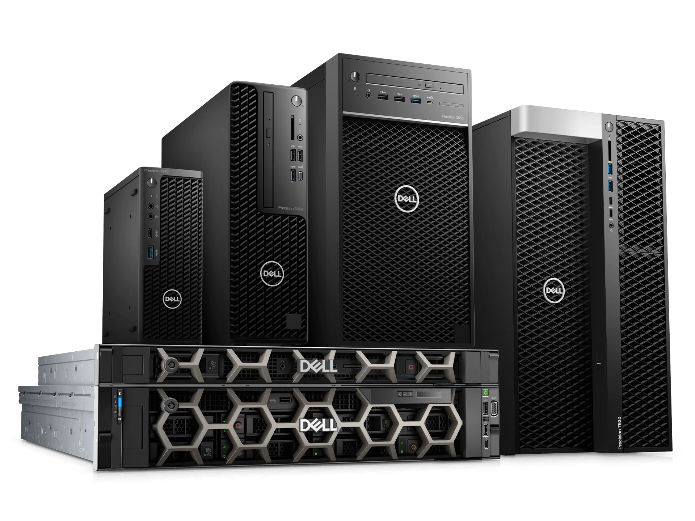

Which Workstation is right for you

Exceptional Performance

Get more done when compiling programs, 3D rendering, or working with large databases. The latest enterprise-grade features, like Intel Xeon processors, NVIDIA® RTX™ 8000 graphics and scalable memory & storage options are built to handle demanding applications.
- Work confidently on industry-specific applications with independent software vendor-certified configurations.
- Deploy and manage AI solution.
- More sustainable than ever: The Dell Precision portfolio is made with up to 46% recycled plastic and uses another 11% closed-loop plastic from our supply chain. In addition to meeting sustainability standards set by the Global Electronics Council, Precision products are EPEAT-registered and ENERGY STAR 8.0 certified.
Precision 3660 Tower Workstation
12th Gen intel Corei7-12700 (25MB cache, 12 cores, 20 threads, 2.10 GHz to 4.90 GHz Turbo, 65W)

Dell Technologies
1404 Park Center DR.
Austin, TX 78754
1(800)624-9897
1404 Park Center DR.
Austin, TX 78754
1(800)624-9897